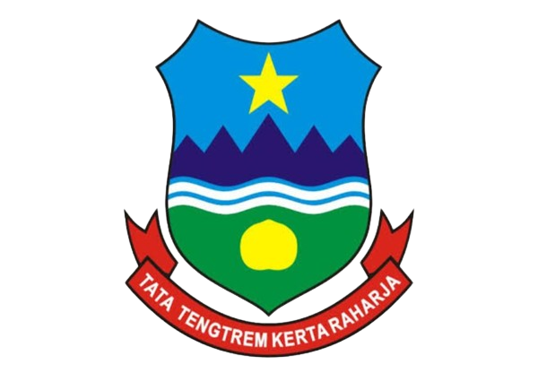

SEJARAH KOTA GARUT
LAMBANG
KOTA GARUT
Hari jadi Garut ke-211
16-02-2024
Sejarah singkat
Awal Sejarah Kabupaten Garut Awal mula sejarah kabupaten Garut berawal dari kabupaten Limbangan, yang dirubah menjadi kabupaten Garut yang ibu kotanya terletak di Suci pada tahun 1811 oleh Daendles. Dengan alasan bahwasanya pada akhir – akhir sebelum dipindahkan produksi kopi yang ada di Limbangan menurun drastis hingga titik paling rendah, dan bupati menolak menanam bila (indigo)(Toha, 2020). Akhir masa hampa kabupaten di Limbangan dan sekitarnya dengan dibentuknya Afdeling baru oleh Letnan Jendral Raffles pada tahun 1813 merupakan awal sejarah kabupatin atau kabupaten Garut (Nisa & C. Arief Gumbira, 2015).
Sebelum Garut ini menjadi kota yang asari yang makmur, dulu pada saat tentara Jepang menjajah Indonesia, Garut ini dikuasai oleh tentara Jepang secara penuh, penduduk tentara Jepang membubarkan sekolah-sekolah yang ada di kota Garut, yang merupakan warisan dari Belanda. Pada tahun 1942 sekolah baru bisa dibuka lagi dengan julukan Sekolah Rakyat, lama sekolah tersebut sama seperti sekolah dasar yaitu enam tahun, sama juga seperti pada saat penjajahan Belanda. Dan pada tahun 1942 juga dibuka sekolah tingkat pertama, semua sekolah dasar itu derajat nya sama tidak disbanding-bandingkan atau diskriminasi, dengan adanya penghapusan diskriminasi ini sangat bermanfaat sekali, semua masyarakat bisa merasakan sekolah tanpa adanya status social (Sofianto, 2014). Meskipun nama-nama kabupaten yang baru dibentuk itu sama dengan kabupaten yang telah dihapuskan, yaitu Limbangan dan Sukapura namun dua kabupaten tersebut adalah berlainan dalam pengertian bahwa secara yuridis formal bukan atau tidak merupakan Wilayah kabupaten Limbangan yang beribukota di Garut yang mana didalam naskah ini disebutkan secara singkat sebagai kabupaten Limbangan – Garut, terdiri dari distrik-distrik: 1. Wanakerta 2. Wanaraja, 3. Suci dan 4. Panembong. Distrik Wanakerta dan Wanaraja berasal dari kabuten Limbangan lama, sedangkan distrik Suci dan Panembong berasal dari kabupaten Sukapura lama. Yang sangat menarik hati bahwa distrik Limbangan dimasukan, dengan demikian kabupaten baru Limbangan - Garut adalah kabupaten Limbangan tanpa Limbangan.